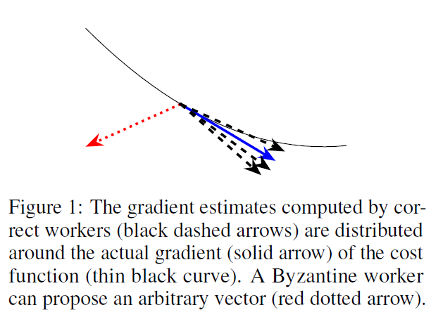

NIPS 2017
论文提出被服务器选中的向量应该满足
- 平均指向与梯度相同的方向
- 具有由统计矩（最多到四阶矩）中的齐次多项式限定的梯度的正确估计量
一种达到这种目的的方法是考虑majority-based approach，即检查每个$n-f$个向量的子集，然后考虑直径最小的子集。但是这样做的复杂度过高（指数复杂度）。
但是通过结合majority-based approach和squared-distance-based methods，可以选择一个和它的$n-f$个邻居最接近的vector，即最小化它与离它最近的$n-f$个向量的平方距离的向量。
基于此，论文作者提出了Krum，假设$2f + 2 < n$，Krum能够抵御拜占庭攻击。
Krum的复杂度为$O(n^2\cdot d)$，其中$d$表示向量维度
Model
考虑1个server，$n$个worker，其中$f$个可能是拜占庭节点的情况
在第$t$轮，server向所有worker广播参数向量$x_t \in \mathbb{R}^d$，每个正常的worker $p$计算出的$\nabla Q(x_t)$的预估梯度为$V_p^t = G(x_t, \xi_p^t)$，其中$\xi_p^t$是一个随机变量，表示从数据集中抽取的随机样本（其实就是worker针对自己的数据集和当前的全局模型所计算出来的梯度，猜想论文作者是想说，每个worker针对自己的数据集，对全局模型下一阶段的梯度做一个预估）。
拜占庭节点可以提出一个任意偏离其计算出的正确结果的向量，如图1所示

参数服务器通过聚合策略$F$来计算向量
正确的拜占庭节点被假设会计算全局梯度的无偏估计。更确切地，在第$t$轮，worker提出的向量$V_i^t$应该是独立同分布的，即
Byzantine Resilience
在大多数基于SGD的学习算法中，聚合规则是计算输入向量的平均值。
一个Byzantine-resilient聚合策略应该输出一个和真实梯度$g$差距不大的向量$F$，更具体地，应该指向要优化的损失函数的最陡方向，这表示为预期向量$F$和$g$的标量积的下限

如图2所示，如果$\mathbb{E}F$属于以$g$为中心，半径为$r$的球，则标量积的边界为$\sin \alpha = r / ||g||$
定义1 $(\alpha,f)$-Byzantine Resilience
令$0 \leq \alpha < \pi / 2$表示任意角度值，$0 \leq f \leq n$表示任意证书，令$V_1, \ldots, V_n$表示$\mathbb{R}^d$的任意独立同分布的随机向量，令$B_1, \ldots, B_f$表示$\mathbb{R}^d$的任意随机向量。聚合策略$F$是$(\alpha, f)$-Byzantine resilient当且仅当对于任意$1\leq j_i < \cdots < j_f \leq n$，向量
满足①$\left \langle \mathbb{E}F, g \right \rangle \geq (1 - \sin \alpha) \cdot \left |g\right |^2 > 0$；②for$\ \ r = 2, 3, 4, \mathbb{E}\left| F \right|^r$以线性组合为界限，且
The Krum Function
重心聚合规则是一个$\mathbb{R}^d$的向量，最小化，但是无法应对哪怕只有一个拜占庭节点。例如，拜占庭节点可以尝试在众多$V_i$中选择一个能够最小化$\sum_i \left| U - V_i\right|^2$的向量$U$（离所有向量都近的向量）。然而，由于求和涉及到所有向量，因此一个拜占庭节点可以提出一个足够大的向量，强制整个中心接近另一个拜占庭节点所提出的向量。
Krum通过排除过远的向量来规避这一问题。Krum的聚合规则$\operatorname{KR}(V_i, \ldots, V_n)$如下所示：
对于任意$i \neq j$，我们用表示属于离最近的个向量，然后我们定义对于任一个worker ，score （求和是在个离最近的向量上进行的）。
最后，，其中指的是分数最小的一个worker
Multi-Krum
论文提出了Krum的一个变种，Multi-Krum。Multi-Krum和Krum一样计算每个向量的分数。然后选择 个得分最好的向量，然后以这个向量的平均作为输出。当和的时候，分别对应Krum和直接平均这两种方法。